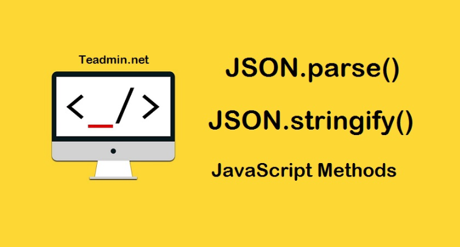

Security
.jpg)
The article "How to Build HTML Forms Right: Security" provides an overview of security considerations when creating web forms. It discusses applying security principles to the frontend, backend, DNS, and more. As the final part of a series on building web forms, it emphasizes the importance of secure coding practices to protect against vulnerabilities. Previous parts of the series cover semantics, accessibility, styling, and user experience.
Clean code writing

- Care About Your Code: The most crucial aspect is to care about writing clean code. Passion and attention to detail reflect in your HTML.
- Indentation: Properly indented code is easier to read, understand, modify, and maintain.
- Consistency: Be consistent in your coding practices, whether it's using dashes or underscores, single or double quotes, or the number of spaces for indentation.
- Avoid Overusing <div> Elements: Use semantic HTML elements instead of wrapping everything in <div> tags.
- Minimize Comments: HTML is self-explanatory, so excessive comments are unnecessary. Rewrite bad code instead of commenting on it.
- Meaningful Class Names: Use clear and descriptive names for your classes and IDs to make your HTML more readable.
- Use Whitespace: Proper use of whitespace, including indentation and line breaks, makes your code more readable.
- Learn from the Best: Study and replicate clean code from open-source projects, blogs, and courses to improve your own coding practices.
JSON
JSON is a widely available feature established since July 2015. It works across many devices and browser versions. The JSON namespace object provides static methods for parsing and converting values to JavaScript Object Notation (JSON). Unlike most global objects, JSON is not a constructor and cannot be invoked as a function. All its properties and methods are static, similar to the Math object.
How to Use LocalStorage in JavaScript

This article by Benjamin Semah explores the use of LocalStorage in modern web development. It emphasizes the importance of persisting data to improve performance and enhance the user experience. The article provides a detailed explanation of what LocalStorage is, how it differs from Session Storage, and how to implement it in web applications. It also includes a practical example, instructions on viewing LocalStorage in DevTools, and discusses the benefits and limitations of using LocalStorage.